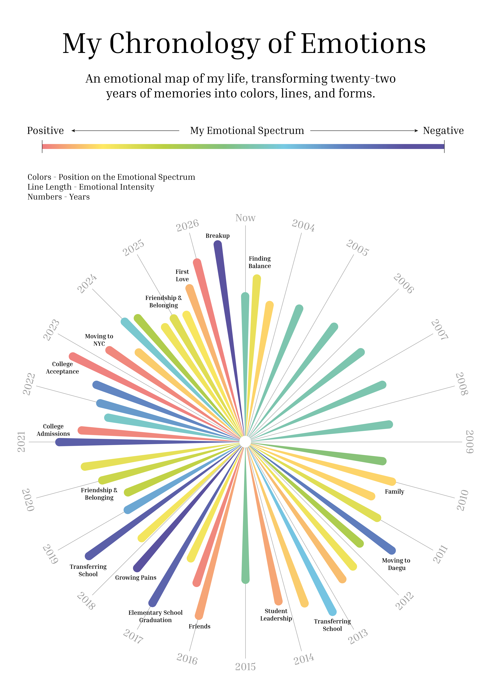
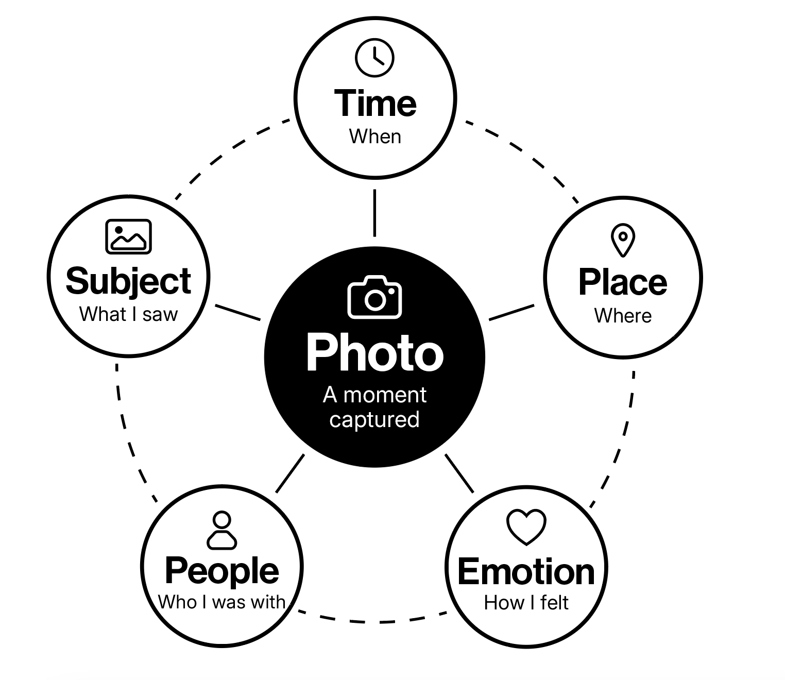

Inspiration
What does movement mean to me?
MOVING began with my emotional timeline, which revealed that my strongest emotional shifts often occurred during moments of movement, while stability brought calm. Using photographs as records of these transitions, this project visualizes how changes in place, relationships, and experience shape my emotions over time.

About The Project
Questions that shape the archive
- What is a photograph to me?
- What does it mean to take a photograph?
- How does movement shape my emotions over time?
MOVING is a personal data visualization project that turns a photo archive into a visual story of movement, experience, and emotion. It is both a record of my life and an exploration of how data can reveal meaning in memory.

About The Data
Photographs are more than images.
Each photograph in MOVING is treated as a record shaped by time, place, people, subjects, and emotions. By organizing these elements as data, the archive reveals patterns that may not be visible when looking at photographs individually. It allows me to trace where I moved, what I photographed, who I was with, and how these elements changed across different moments and places.
The data is personal, not objective.
The emotions and meanings attached to each photograph are based on my own memory and interpretation rather than objective measurements. They reflect how I remember each moment now, which may change over time. In this way, MOVING does not attempt to measure my experiences precisely, but uses data as a way to explore how photographs, movement, emotion, and memory continuously shape one another.